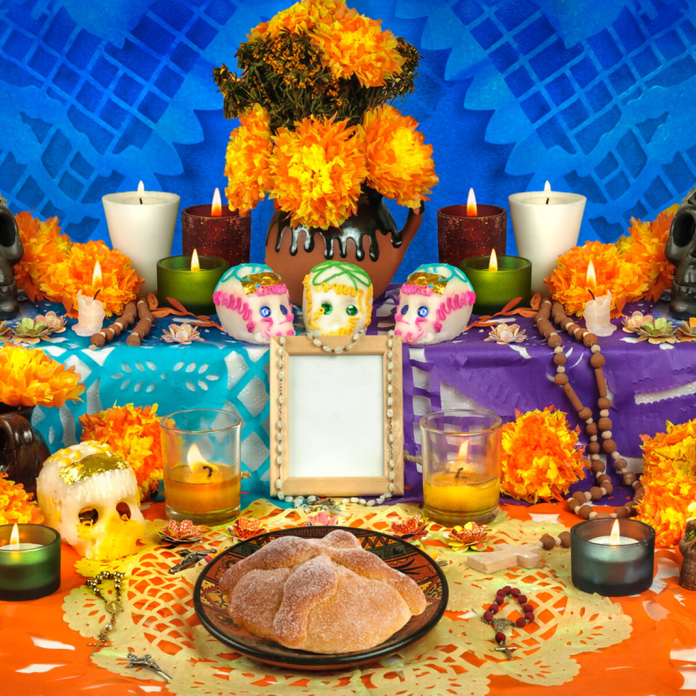

El Día de Muertos tiene raíces en las culturas indígenas que habitaban el territorio que hoy es México. Para pueblos como los mexicas, la muerte formaba parte del ciclo de la vida y se relacionaba con distintas creencias sobre el destino de las personas después de morir. Algunas comunidades realizaban ceremonias y ofrendas para recordar a sus difuntos. Estas prácticas no eran iguales en todos los pueblos ni se celebraban exactamente en las mismas fechas.
Con la llegada de los españoles en el siglo XVI, las creencias indígenas se encontraron con las tradiciones católicas. La Iglesia celebraba el Día de Todos los Santos, el 1 de noviembre, y el Día de los Fieles Difuntos, el 2 de noviembre. Con el paso del tiempo, las costumbres indígenas y las europeas se mezclaron. De esa unión surgió una celebración con características propias, que fue cambiando de acuerdo con las costumbres de cada región.
Hoy, muchas familias mexicanas colocan altares u ofrendas en sus casas o visitan los panteones para recordar a sus seres queridos. En los altares pueden ponerse fotografías, veladoras, flores de cempasúchil, agua, sal, papel picado y alimentos que disfrutaban las personas fallecidas. También son comunes el pan de muerto, las calaveritas de azúcar y las visitas al cementerio. Los elementos cambian según la región y las tradiciones familiares.

La flor de cempasúchil, por su color y aroma, se usa tradicionalmente para adornar y señalar el camino hacia la ofrenda. Las veladoras representan la luz que guía; el agua simboliza una forma de aliviar la sed del difunto, y las fotografías ayudan a recordar a quién está dedicada la ofrenda. La comida expresa cariño y hospitalidad. Cada familia puede dar a estos objetos un significado especial.
El Día de Muertos es una de las expresiones culturales más representativas de México. En 2008, la UNESCO inscribió la celebración indígena dedicada a los muertos en México en la Lista Representativa del Patrimonio Cultural Inmaterial de la Humanidad. Este reconocimiento destaca la importancia de conservar los conocimientos, las ceremonias y las formas comunitarias de recordar a los difuntos.